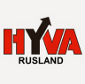
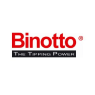
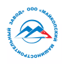

Продукция
Партнеры
- 
- 
- 
Почему Механический завод “Сотранс”?
- Гарантия
- Быстрый ремонт
- Оригинальные запчасти
- Современные технологии
- Поддержка
- Индивидуальный подход
Новости
SOTRANS — Эксперты по СПС
Компания SOTRANS — включена в перечень экспертов по перевозке скоропортящихся пищевых продуктов. Особый статус полномочного эксперта присвоен ООО «Техцентры СОТРАНС» 25 февраля 2022 года. Информация размещена на официальном сайте официальном сайте ФБУ «Росавтотранс»
ЧитатьSOTRANS — Эксперты по СПС
Компания SOTRANS — включена в перечень экспертов по перевозке скоропортящихся пищевых продуктов. Особый статус полномочного эксперта присвоен ООО «Техцентры СОТРАНС» 25 февраля 2022 года. Информация размещена на официальном сайте официальном сайте ФБУ «Росавтотранс»
ЧитатьSOTRANS — Эксперты по СПС
Компания SOTRANS — включена в перечень экспертов по перевозке скоропортящихся пищевых продуктов. Особый статус полномочного эксперта присвоен ООО «Техцентры СОТРАНС» 25 февраля 2022 года. Информация размещена на официальном сайте официальном сайте ФБУ «Росавтотранс»
ЧитатьSOTRANS — Эксперты по СПС
Компания SOTRANS — включена в перечень экспертов по перевозке скоропортящихся пищевых продуктов. Особый статус полномочного эксперта присвоен ООО «Техцентры СОТРАНС» 25 февраля 2022 года. Информация размещена на официальном сайте официальном сайте ФБУ «Росавтотранс»
Читать